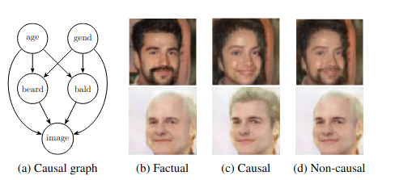

What is Counterfactual Image Generation?
Counterfactual image generation is an exciting frontier in generative AI that creates plausible alternative versions of images to explore "what if" scenarios. Unlike traditional image editing, which often alters images without considering the underlying causal relationships, it explicitly models these essential connections to produce realistic and coherent results.
Counterfactuals allow us to visualize potential consequences of changing specific attributes, such as age or gender, within an image. For instance, modifying a person's age might lead to an unrealistic outcome if not informed by causal relationships. By addressing these nuances, counterfactual image generation aims to ensure that the edited images reflect plausible realities rather than misleading artifacts.
![Figure 2: Producing a counterfactual MorphoMNIST digit: Abduction: We infer the exogenous noise separately, using Normalising Flows f −1 for the attributes and the encoder of the image mechanism (e.g. VAE, HVAE or GAN), conditioned on the factual parents. Action: We intervene do(t ∗ ) only on thickness. Prediction: We employ the Normalizing Flow f conditioned on the counterfactual thickness t ∗ to obtain i ∗ after the intervention. Note that this is not needed for t ∗ on which we intervene and for d ∗ that has no parents in the DAG. Finally, the decoder generates the counterfactual image, given the exogenous noise U img and all counterfactual attributes.](static/images/abduction_action_prediction.png)